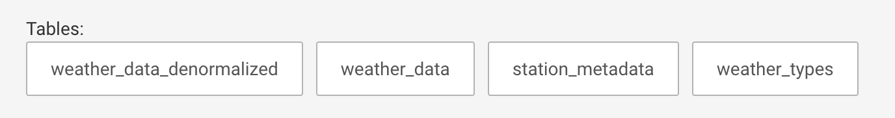
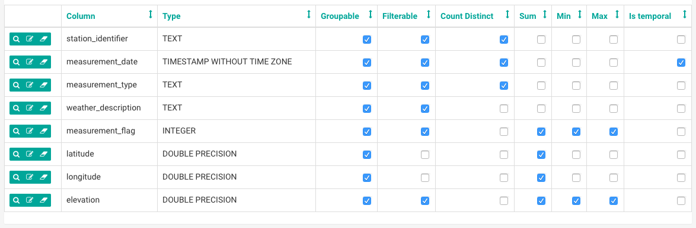
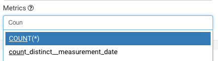
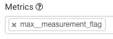
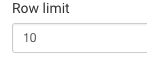
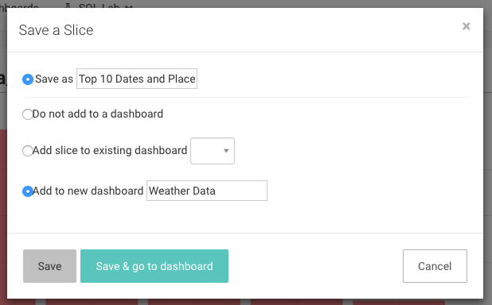
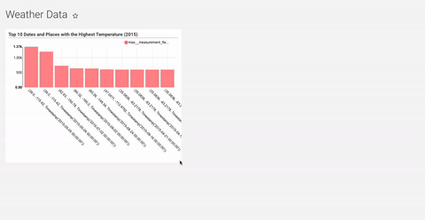

Tutorial for Superset Administrators¶
This tutorial targets a Superset administrator: someone configuring Superset for an organization on behalf of users. We’ll show you how to connect Superset to a new database and configure a table in that database for analysis. You’ll also explore the data you’ve exposed and add a visualization to a dashboard so that you get a feel for the end-to-end user experience.
Connecting to a new database¶
We assume you already have a database configured and can connect to it from the instance on which you’re running Superset. If you’re just testing Superset and want to explore sample data, you can load some sample PostgreSQL datasets into a fresh DB, or configure the example weather data we use here.
Under the Sources menu, select the Databases option:

On the resulting page, click on the green plus sign, near the top left:
{kind=link}
You can configure a number of advanced options on this page, but for this walkthrough, you’ll only need to do two things:
- Name your database connection:

- Provide the SQLAlchemy Connection URI and test the connection:
{kind=link}
This example shows the connection string for our test weather database. As noted in the text below the URI, you should refer to the SQLAlchemy documentation on creating new connection URIs for your target database.
Click the Test Connection button to confirm things work end to end. Once Superset can successfully connect and authenticate, you should see a popup like this:
{kind=link}
Moreover, you should also see the list of tables Superset can read from the schema you’re connected to, at the bottom of the page:
{kind=link}
If the connection looks good, save the configuration by clicking the Save button at the bottom of the page:

Adding a new table¶
Now that you’ve configured a database, you’ll need to add specific tables to Superset that you’d like to query.
Under the Sources menu, select the Tables option:
{kind=link}
On the resulting page, click on the green plus sign, near the top left:

You only need a few pieces of information to add a new table to Superset:
- The name of the table

- The target database from the Database drop-down menu (i.e. the one you just added above)

- Optionally, the database schema. If the table exists in the “default” schema (e.g. the public schema in PostgreSQL or Redshift), you can leave the schema field blank.
Click on the Save button to save the configuration:
When redirected back to the list of tables, you should see a message indicating that your table was created:
{kind=link}
This message also directs you to edit the table configuration. We’ll edit a limited portion of the configuration now - just to get you started - and leave the rest for a more advanced tutorial.
Click on the edit button next to the table you’ve created:

On the resulting page, click on the List Table Column tab. Here, you’ll define the way you can use specific columns of your table when exploring your data. We’ll run through these options to describe their purpose:
- If you want users to group metrics by a specific field, mark it as Groupable.
- If you need to filter on a specific field, mark it as Filterable.
- Is this field something you’d like to get the distinct count of? Check the Count Distinct box.
- Is this a metric you want to sum, or get basic summary statistics for? The Sum, Min, and Max columns will help.
- The is temporal field should be checked for any date or time fields. We’ll cover how this manifests itself in analyses in a moment.
Here’s how we’ve configured fields for the weather data. Even for measures like the weather measurements (precipitation, snowfall, etc.), it’s ideal to group and filter by these values:
As with the configurations above, click the Save button to save these settings.
Exploring your data¶
To start exploring your data, simply click on the table name you just created in the list of available tables:

By default, you’ll be presented with a Table View:
Let’s walk through a basic query to get the count of all records in our table. First, we’ll need to change the Since filter to capture the range of our data. You can use simple phrases to apply these filters, like “3 years ago”:

The upper limit for time, the Until filter, defaults to “now”, which may or may not be what you want.
Look for the Metrics section under the GROUP BY header, and start typing “Count” - you’ll see a list of metrics matching what you type:
Select the COUNT(*) metric, then click the green Query button near the top of the explore:

You’ll see your results in the table:

Let’s group this by the weather_description field to get the count of records by the type of weather recorded by adding it to the Group by section:
and run the query:

Let’s find a more useful data point: the top 10 times and places that recorded the highest temperature in 2015.
We replace weather_description with latitude, longitude and measurement_date in the Group by section:
And replace COUNT(*) with max__measurement_flag:
The max__measurement_flag metric was created when we checked the box under Max and next to the measurement_flag field, indicating that this field was numeric and that we wanted to find its maximum value when grouped by specific fields.
In our case, measurement_flag is the value of the measurement taken, which clearly depends on the type of measurement (the researchers recorded different values for precipitation and temperature). Therefore, we must filter our query only on records where the weather_description is equal to “Maximum temperature”, which we do in the Filters section at the bottom of the explore:

Finally, since we only care about the top 10 measurements, we limit our results to 10 records using the Row limit option under the Options header:
We click Query and get the following results:

In this dataset, the maximum temperature is recorded in tenths of a degree Celsius. The top value of 1370, measured in the middle of Nevada, is equal to 137 C, or roughly 278 degrees F. It’s unlikely this value was correctly recorded. We’ve already been able to investigate some outliers with Superset, but this just scratches the surface of what we can do.
You may want to do a couple more things with this measure:
- The default formatting shows values like 1.37k, which may be difficult for some users to read. It’s likely you may want to see the full, comma-separated value. You can change the formatting of any measure by editing its config (Edit Table Config > List Sql Metric > Edit Metric > D3Format)
- Moreover, you may want to see the temperature measurements in plain degrees C, not tenths of a degree. Or you may want to convert the temperature to degrees Fahrenheit. You can change the SQL that gets executed agains the database, baking the logic into the measure itself (Edit Table Config > List Sql Metric > Edit Metric > SQL Expression)
For now, though, let’s create a better visualization of these data and add it to a dashboard.
We change the Chart Type to “Distribution - Bar Chart”:

Our filter on Maximum temperature measurements was retained, but the query and formatting options are dependent on the chart type, so you’ll have to set the values again:
You should note the extensive formatting options for this chart: the ability to set axis labels, margins, ticks, etc. To make the data presentable to a broad audience, you’ll want to apply many of these to slices that end up in dashboards. For now, though, we run our query and get the following chart:

Creating a slice and dashboard¶
This view might be interesting to researchers, so let’s save it. In Superset, a saved query is called a Slice.
To create a slice, click the Save as button near the top-left of the explore:
A popup should appear, asking you to name the slice, and optionally add it to a dashboard. Since we haven’t yet created any dashboards, we can create one and immediately add our slice to it. Let’s do it:
{kind=link}
Click Save, which will direct you back to your original query. We see that our slice and dashboard were successfully created:
{kind=link}
Let’s check out our new dashboard. We click on the Dashboards menu:

and find the dashboard we just created:
Things seemed to have worked - our slice is here!

But it’s a bit smaller than we might like. Luckily, you can adjust the size of slices in a dashboard by clicking, holding and dragging the bottom-right corner to your desired dimensions:
{kind=link}
After adjusting the size, you’ll be asked to click on the icon near the top-right of the dashboard to save the new configuration.
Congrats! You’ve successfully linked, analyzed, and visualized data in Superset. There are a wealth of other table configuration and visualization options, so please start exploring and creating slices and dashboards of your own.